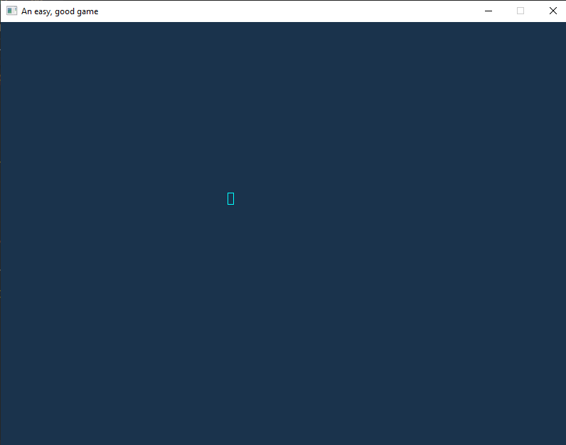

I wired up a very basic renderer this morning. It is not optimized whatsoever, but that is not my concern. I want to get something drawing so I can start working on core gameplay, then pivot to a better solution after I have the engine built.
If you recall, yesterday was building out a way to update all entities. Today I leveraged that to render some bounding boxes.
First I'll add a new entity to draw as well as a way to view all entities. You'll note I swapped the update order for the read world and write world. This was done in the event I want to do some form of multithreading.
// simulation.rs
use crate::{hardware_input::HardwareInputState, prelude::*};
use benchy::Benchy;
/// Simulation code.
pub struct Simulation {
frame: Frame,
read_world: World,
write_world: World,
}
impl Simulation {
/// Returns a list of active entities.
pub fn entities(&self) -> &[Entity] {
self.read_world.entities()
}
/// Creates a new simulation.
pub fn new() -> Self {
let mut write_world = World::new();
if let Some(entity) = write_world.add_entity() {
let position = entity.position.upsert();
position.x = 320;
position.y = 240;
let aabb = entity.bounding_box.upsert();
aabb.width = 8;
aabb.height = 16;
}
Self {
frame: Frame::default(),
read_world: World::new(),
write_world,
}
}
/// Performs a single tick of the simulation code.
pub fn tick(&mut self, hardware_input: HardwareInputState) {
Benchy::time("simulation::Simulation::tick");
self.frame = self.frame.increment(1);
// Update the write world's state
self.write_world
.update(self.frame, hardware_input, &self.read_world);
// Update the read world's state to match the current one
self.read_world.copy(&self.write_world);
}
}
I exposed this method on the GameEngine struct as well.
Finally I'll show off my main loop. I've yet to add in input handling, but that should be relatively simple to do.
use core_engine::prelude::*;
use ggez::event;
use ggez::graphics::{self, Color};
use ggez::{Context, GameResult};
fn main() -> GameResult {
let cb = ggez::ContextBuilder::new("noiseless_mountain", "eolson");
let (ctx, event_loop) = cb.build()?;
let state = MainState::new()?;
event::run(ctx, event_loop, state);
}
struct MainState {
engine: GameEngine,
}
impl MainState {
fn new() -> GameResult<MainState> {
let use_replay = false;
let (logger_file, replay_file) = if use_replay {
(None, Some("logs.json".into()))
} else {
(Some("logs.json".into()), None)
};
let opts = GameOptions {
benchmark_file: "benchmark.json".into(),
hz: 60,
replay_file,
logger_file,
};
let engine = GameEngine::new(opts);
Ok(Self { engine })
}
}
impl event::EventHandler<ggez::GameError> for MainState {
fn update(&mut self, _ctx: &mut Context) -> GameResult {
match self.engine.tick() {
TickResult::NoChange => {}
TickResult::UpdatedState => {
// ???
}
}
Ok(())
}
fn draw(&mut self, ctx: &mut Context) -> GameResult {
graphics::clear(ctx, [0.1, 0.2, 0.3, 1.0].into());
for entity in self.engine.entities() {
if let Some(position) = entity.position.item() {
// Draw bounding box
if let Some(bounding_box) = entity.bounding_box.item() {
let square = graphics::Mesh::new_rectangle(
ctx,
graphics::DrawMode::stroke(1.0),
graphics::Rect {
x: 0.0,
y: 0.0,
w: bounding_box.width as f32,
h: bounding_box.height as f32,
},
Color::CYAN,
)?;
graphics::draw(
ctx,
&square,
([position.x as f32, position.y as f32], Color::WHITE),
)?;
}
}
}
graphics::present(ctx)?;
Ok(())
}
}
Some of the next things I'd like to do are
Add in a render pass construct rather than iterating over entities
Add in interpolation for the render pass
Load worlds from JSON
Controlled character
Elixir matchmaking server
S3 bucket for content
I suspect the next steps for me will be creating a platformer, then iterating on that.
Here's a screenshot of what it looks like so far:
